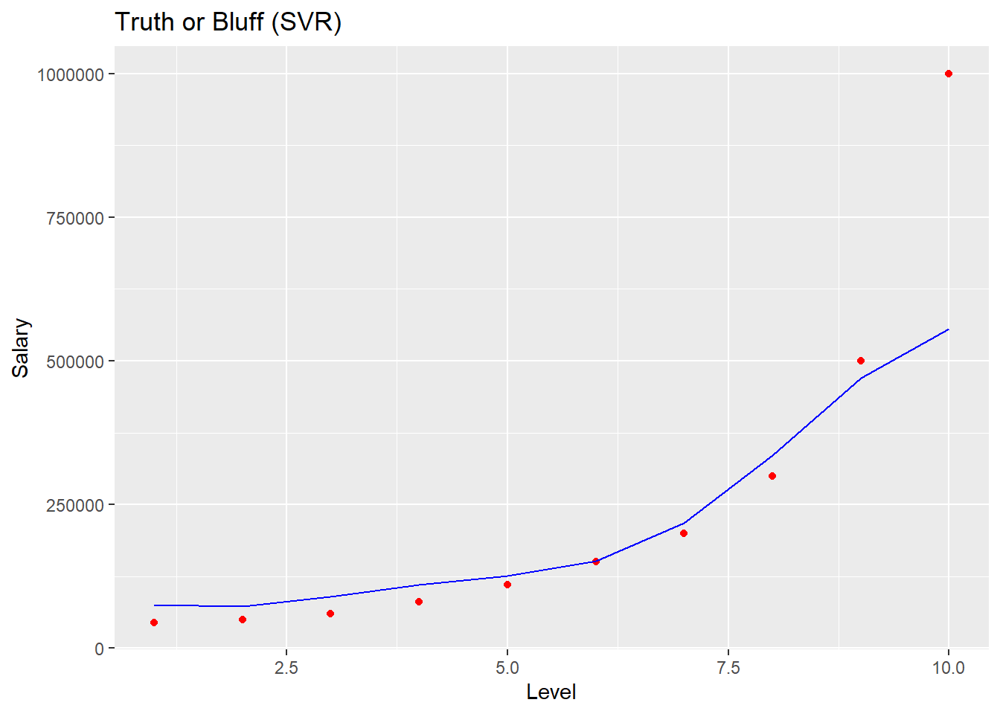
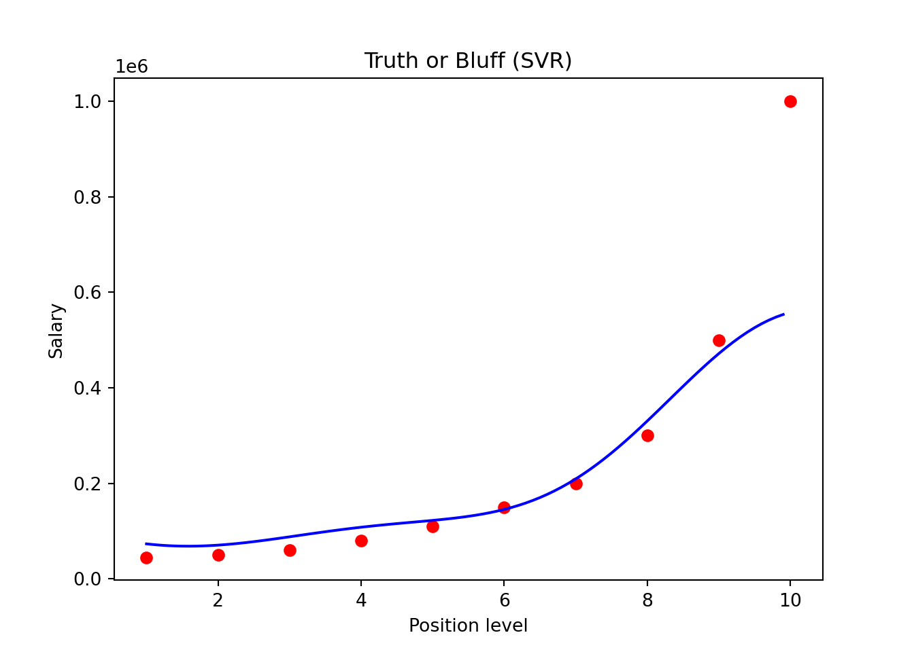
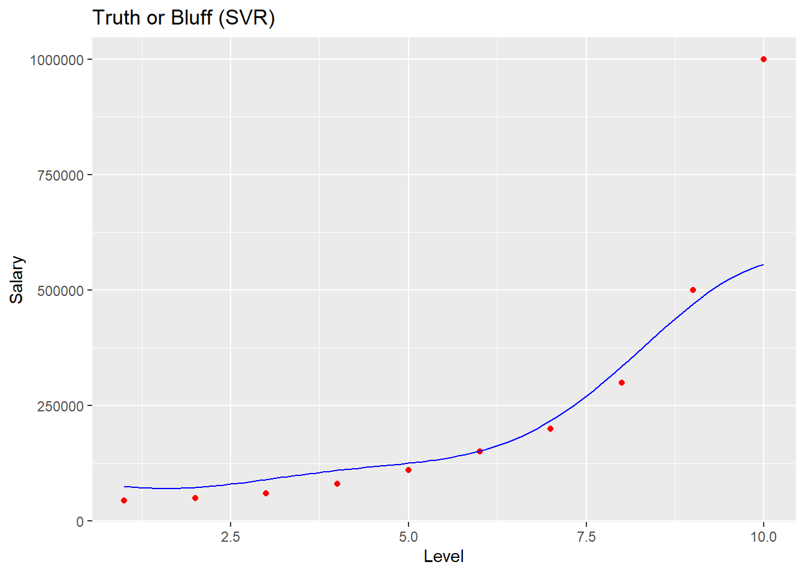

2.4 Support Vector Regression
2.4.1 Importing the libraries
Python
import numpy as np
import matplotlib.pyplot as plt
import pandas as pd2.4.2 Importing the dataset
Python
dataset = pd.read_csv('Position_Salaries.csv')
X = dataset.iloc[:, 1:-1].values
y = dataset.iloc[:, -1].values
print(X)
## [[ 1]
## [ 2]
## [ 3]
## [ 4]
## [ 5]
## [ 6]
## [ 7]
## [ 8]
## [ 9]
## [10]]
print(y)
## [ 45000 50000 60000 80000 110000 150000 200000 300000 500000
## 1000000]
y = y.reshape(len(y),1)
print(y)
## [[ 45000]
## [ 50000]
## [ 60000]
## [ 80000]
## [ 110000]
## [ 150000]
## [ 200000]
## [ 300000]
## [ 500000]
## [1000000]]R
dataset = read.csv('Position_Salaries.csv')
dataset = dataset[2:3]2.4.3 Feature Scaling
Python
from sklearn.preprocessing import StandardScaler
sc_X = StandardScaler()
sc_y = StandardScaler()
X = sc_X.fit_transform(X)
y = sc_y.fit_transform(y)
print(X)
## [[-1.57]
## [-1.22]
## [-0.87]
## [-0.52]
## [-0.17]
## [ 0.17]
## [ 0.52]
## [ 0.87]
## [ 1.22]
## [ 1.57]]
print(y)
## [[-0.72]
## [-0.7 ]
## [-0.67]
## [-0.6 ]
## [-0.49]
## [-0.35]
## [-0.17]
## [ 0.18]
## [ 0.88]
## [ 2.64]]R
# training_set = scale(training_set)
# test_set = scale(test_set)2.4.4 Training the SVR model on the whole dataset
Python
from sklearn.svm import SVR
regressor = SVR(kernel = 'rbf')
regressor.fit(X, y)
## SVR()
##
## C:\Users\murph\mambaforge\lib\site-packages\sklearn\utils\validation.py:63: DataConversionWarning: A column-vector y was passed when a 1d array was expected. Please change the shape of y to (n_samples, ), for example using ravel().
## return f(*args, **kwargs)R
# install.packages('e1071')
library(e1071)
regressor = svm(formula = Salary ~ .,
data = dataset,
type = 'eps-regression',
kernel = 'radial')2.4.5 Predicting a new result
Python
sc_y.inverse_transform(regressor.predict(sc_X.transform([[6.5]])))
## array([170370.02])R
y_pred = predict(regressor, data.frame(Level = 6.5))2.4.6 Visualising the SVR results
Python
plt.scatter(sc_X.inverse_transform(X), sc_y.inverse_transform(y), color = 'red')
plt.plot(sc_X.inverse_transform(X), sc_y.inverse_transform(regressor.predict(X)), color = 'blue')
plt.title('Truth or Bluff (SVR)')
plt.xlabel('Position level')
plt.ylabel('Salary')
plt.show()R
# install.packages('ggplot2')
library(ggplot2)
ggplot() +
geom_point(aes(x = dataset$Level, y = dataset$Salary),
colour = 'red') +
geom_line(aes(x = dataset$Level, y = predict(regressor, newdata = dataset)),
colour = 'blue') +
ggtitle('Truth or Bluff (SVR)') +
xlab('Level') +
ylab('Salary')
2.4.7 Visualising the SVR results (for higher resolution and smoother curve)
Python
X_grid = np.arange(min(sc_X.inverse_transform(X)), max(sc_X.inverse_transform(X)), 0.1)
X_grid = X_grid.reshape((len(X_grid), 1))
plt.scatter(sc_X.inverse_transform(X), sc_y.inverse_transform(y), color = 'red')
plt.plot(X_grid, sc_y.inverse_transform(regressor.predict(sc_X.transform(X_grid))), color = 'blue')
plt.title('Truth or Bluff (SVR)')
plt.xlabel('Position level')
plt.ylabel('Salary')
plt.show()
R
# install.packages('ggplot2')
library(ggplot2)
x_grid = seq(min(dataset$Level), max(dataset$Level), 0.1)
ggplot() +
geom_point(aes(x = dataset$Level, y = dataset$Salary),
colour = 'red') +
geom_line(aes(x = x_grid, y = predict(regressor, newdata = data.frame(Level = x_grid))),
colour = 'blue') +
ggtitle('Truth or Bluff (SVR)') +
xlab('Level') +
ylab('Salary')